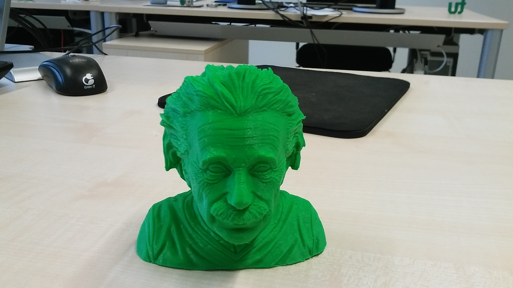
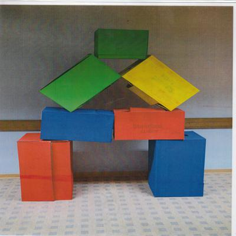

Profs:
0
Studis:
0
Beat your
Prof '22
jDPG Regionalgruppe Dortmund
Wir suchen neue Mitglieder!Kontakt: dortmund@jdpg.de und dortmund.jdpg.de
Der Preis
Die Ehre und ...

der TU-Grüne Einstein
der TU-Grüne Einstein
Die Prüfungsordnung
-
Disziplinen:
Herausforderungen 1 Punkt Finale 3 Punkte - Bei den Spielen treten 2 Studierende an
- Diese werden in jedem Spiel neu aus dem Publikum gewählt
|
|
Herausforderung 1
ArXiv vs. SnarXiv
1 Punkt
Regeln
- Teams spielen gleichzeitig
- Es werden zwei Titel gezeigt
- Nur einer der Titel gehört zu einem echten Paper
- Für jedes richtig zugeordnete Paper gibt es einen SpielPunkt
Es folgt ein Beispiel
| a) | Out-of-plane nonlinear optical responses of superconducting cuprates detected by Terahertz pump-Terahertz probe spectroscopy |
| b) | Forbidden quantum beats by an ultrafast symmetry switch in a Weyl semimetal |
| a) | Out-of-plane nonlinear optical responses of superconducting cuprates detected by Terahertz pump-Terahertz probe spectroscopy |
| b) | Forbidden quantum beats by an ultrafast symmetry switch in a Weyl semimetal |
Herausforderung 1
| a) | A new method of terahertz detection: Probe-energy electro-optic sampling |
| b) | An alternative approach to electro-optical detection of terahertz pulses |
| a) | A new method of terahertz detection: Probe-energy electro-optic sampling |
| b) | An alternative approach to electro-optical detection of terahertz pulses |
| a) | Testing Factorization |
| b) | Opportunities in Higgs Physics at the HL-LHC and HE-LHC |
| a) | Testing Factorization |
| b) | Opportunities in Higgs Physics at the HL-LHC and HE-LHC |
| a) | Effect of piezomagnetism on coupling of magnetic domains in hexagonal manganites |
| b) | Magnetoelectric coupling of domains, domain walls and vortices in a multiferroic with independent magnetic and electric order |
| a) | Effect of piezomagnetism on coupling of magnetic domains in hexagonal manganites |
| b) | Magnetoelectric coupling of domains, domain walls and vortices in a multiferroic with independent magnetic and electric order |
| a) | The Z penguin in generic extensions of the Standard Model |
| b) | Dark matter coannihilation |
| a) | The Z penguin in generic extensions of the Standard Model |
| b) | Dark matter coannihilation |
| a) | Superconductor Rydberg Physics |
| b) | Optical control of a dark exciton reservoir |
| a) | Superconductor Rydberg Physics |
| b) | Optical control of a dark exciton reservoir |
|
|
Herausforderung 2
Papierfliger Falten
1 Punkt
Regeln
- Es werden 3 Runden gespielt
- Von oben werden Papierflieger geworfen
- In jeder Runde wird pro Team jeweils ein Papierflieger gefaltet
- Die Papierflieger müssen in jeder Runde unterschiedlich sein
- Es darf nur einmal eine Kugel "gefaltet" werden
- Das Team dessen Flieger am weitesten kommt gewinnt einen SpielPunkt

|
|
Herausforderung 3
Physiker Raten
1 Punkt
Regeln
- Teams spielen gleichzeitig
- Bild wird nach und nach aufgedeckt
- Wer glaubt sie/ihn zu erkennen klingelt
- Nur das Team, was geklingelt hat, darf antworten
- Antwortzeit beträgt 10 Sekunden
- Antwort richtig → Team bekommt Spielpunkt
- Antwort falsch → Gegenteam bekommt Spielpunkt
- Das Team mit den meisten Spielpunkten gewinnt
- Bei Gleichstand bekommen beide Teams einen Punkt
Es folgt ein Beispiel


Emmy Noether
Herausforderung 3
Physiker Raten
1 Punkt
Jan Kierfeld
Nikola Tesla

Richard Feynman
Stephen Hawking
Sheldon Cooper
Paul Dirac
Angela Merkel
|
|
Herausforderung 4
Wikipedia Klickspiel
1 Punkt
Regeln
- Klicks um von Artikel A zu Artikel B zu gelangen
- Die Teams unterbieten sich in ihrer geschätzten Klickanzahl
- Zeitgrenze: 2 Minuten
- Nicht erlaubt: „auf Seite suchen“
- Inhaltsverzeichnis ist kein Klick
- „zurück" ist ein Klick
- Wikipedia darf nicht verlassen werden
Es folgt ein Beispiel
„Physics“
→
„Manhattan Project“02:00
Herausforderung 4
Wikipedia Klickspiel
1 Punkt
„Superconductivity“
→
„Vodka“02:00
„Cat“
→
„Dark matter“02:00
„Maxwell's equations“
→
„Fireworks“02:00
|
|
15:00 min. Pause
|
|
Herausforderung 5
Wii Tennis
1 Punkt
Regeln
- Die Teams treten in einem Doppel gegeneinander an
- Es werden 3 Sätze gespielt
- Der Sieger des Doppels gewinnt dieses Spiel
|
|
Herausforderung 6
Viral oder Egal?
1 Punkt
Regeln
- YouTube-Video und Titel werden gezeigt
- Jedes Team schätzt: Wie viele Klicks hat das Video?
- Schätzung wird laut ausgesprochen
- Teams schätzen abwechselnd als erstes
- Das Team, das näher dran ist, bekommt Spielpunkt
- Team mit den meisten Spielpunkten gewinnt Herausforderung
- Stein-Schere-Papier Gewinner entscheidet, wer als erstes schätzt
Es folgt ein Beispiel
„Onboard H-Bahn“
141
Herausforderung 3
Viral oder Egal?
1 Punkt
„Cats Attack Compilation! Epic Funny Cat Video“
92.915
„Was ist denn mit Karsten los“
1.173.006
„We are TU Dortmund University“
2.010
„How to do Homework“
51.397.817
„Quantum Levitation“
11.157.564
„We Are Electrons - GCSE Physics Electricity Revision Song“
5.803
Ergebnis
|
|
Finale
Montagsmaler und Make & Break
3 Punkte
Regeln
- Teams spielen gleichzeitig
- Die Runde endet, wenn alle Figuren aufgebaut worden sind
- Spielpunkte werden nur bei Montagsmaler gesammelt
- Nach jeder Runde werden die Spiele getauscht
Regeln für Montagsmaler
- Ein Begriff wird gezogen
- Ist der Begriff nicht bekannt, darf ein neuer Begriff gezogen werden.
- Eine Person des Teams zeichnet den Begriff, während die andere ihn zu erraten versucht.
- Die Erklärung des Begriffs darf NUR durch Zeichnen erfolgen
- Pro erratenem Begriff gibt es einen Spielpunkt
Regeln für Make & Break
- 5 Figuren werden auf den Folien gezeigt
- Die Bausteine müssen wie auf den Folien gezeigt angeordnet werden
- Die Moderatoren entscheiden ob die aufgebaute Figur gültig ist
- Es werden jeweils die selben 5 Figuren aufgebaut
Finale
Montagsmaler und Make & Break
3 Punkte
Finale
Figur 1
Figur 2
Figur 3
Figur 4
Figur 5

Punktestand
|
|